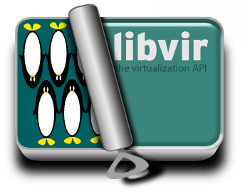

what is libvir?
Libvir is a C toolkit to interract with the virtualization capabilities of recent versions of Linux (and other OSes). It is free software available under the GNU Lesser General Public License. Virtualization of the Linux Operating System means the ability to run multiple instances of Operating Systems concurently on a single hardware system where the basic resources are driven by a Linux instance. The library aim at providing long term stable C API primarily for the Xen paravirtualization mechanism but should be able to integrate other virtualization mechanisms if needed.